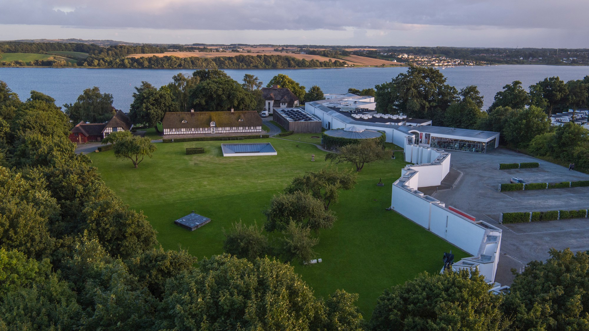
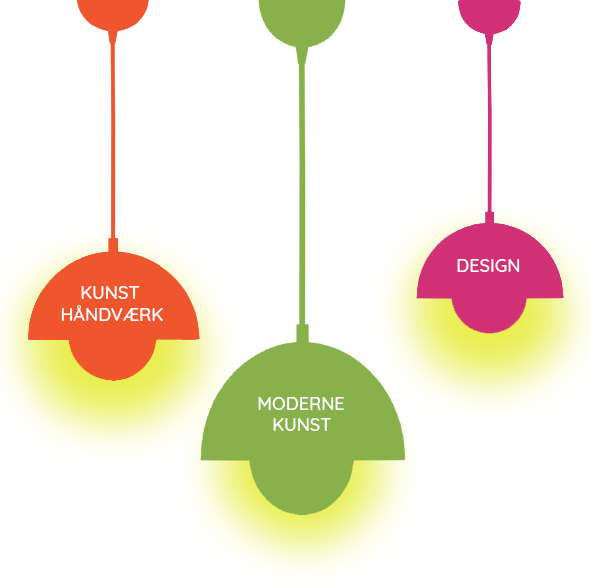
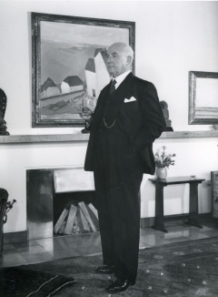

OM TRAPHOLT

Trapholt er museum for moderne kunst, kunsthåndværk og design med enestående arkitektur og naturskøn placering ned til Kolding fjord.
OM OS
Trapholt er et nationalt kulturelt fyrtårn i designbyen Kolding, som er medlem af UNESCO’s Creative Cities Network.
ARKITEKTUR
Museets arkitektur udgør i sig selv en attraktion. Bygget op omkring den centrale museumsgade åbner udstillingslokalerne for spændende rumlige oplevelser. Udenfor står den kraftige, skulpturelle mur, der afgrænser museet til en stor skulpturpark med værker af danske samtidskunstnere.
VERNER PANTON
Trapholt byder blandt andet på en sanselig oplevelse, ind i Danmarks største Verner Panton udstilling. Udstillingen rummer nogle af de mest velkendte værker af Verner Panton, og byder på en gribende historie om denne spektakulære kunstners snoede vej til succes.
PRAKTISK
I Café Gustav Lind er der mulighed for at nyde udsigten over Kolding Fjord og i Trapholt Designbutik præsenteres et bredt udvalg af interiørdesign fra danske og internationale brands.Der er gratis parkering lige ved døren for biler og busser. Trapholt er handicapvenligt indrettet.


HISTORIE

Gustav Lind fotograferet i Trapholt-villaens store opholdsstue, 1950.
Ejendommen Trapholt var oprindelig sommerhus for tandlæge Gustav Lind. Han stammede fra Koldingegnen, men fik en stor karriere i Amsterdam som tandlæge med mange berømtheder som patienter. Midt i 1930erne opkøbte han store arealer i Strandhuse, anlagde et haveanlæg tegnet af C. Th. Sørensen og opførte i 1934 en funkisvilla tegnet af sin mangeårige samarbejdspartner, den hollandske arkitekt A. P. Smits.
Under 2. verdenskrig besluttede Gustav Lind sig til at flytte tilbage til Danmark, og han ombyggede den tidligere sommerbolig til en helårsvilla og satte stråtag på bygningen. Huset stod færdigt i 1945. De øvrige stråtækte bygninger er flyttet fra flere bondegårde mellem Fredericia og Kolding. Gustav Lind anlagde nu også en stor æbleplantage med ca. 12.000 frugttræer omkring Trapholt. Plantagen fik navnet “Trappergården”. Det blev tandlægens hovedbeskæftigelse at bestyre den efter hjemkomsten til Danmark. Enkelte af æbletræerne står stadig bag den hvide mur til venstre for indgangen til Trapholt.